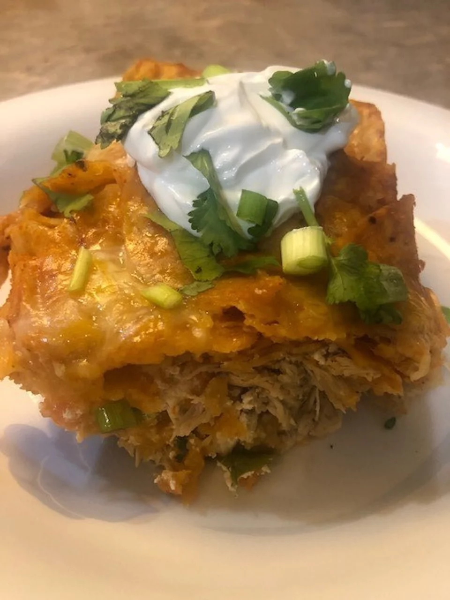

Anne's Chicken Chilaquiles Rojas

Description
One of my favorite comfor foods from growing up in Tucson. It's great for a
potluck or party and you'll get lots of compliments from your guests!
This is a "roja" version but there is a "verde" style too. Both are great and
can be made hot or mild depending upon your heat tolernaces or preferences.
Serve with your favorite salsa, if desired.
Ingredients
- 1 (28 ounce) can whole peeled tomatoes, drained
- 2 chipotle chiles in adobo sauce, or more to taste
- 1 1/2 tablespoons vegetable oil
- 1 large white onion, thinlu sliced
- 3 cloves garlic, minced
- 1 12 cups chicken broth
- 1 dash roasted ground cumin
- 1 dash dried oregano
- salt and ground black pepper to taste
- 1 (16 ounce) package tortilla chips
- 1 (8 ounce) package shredded Mexican cheese blend
- 1 whole cooked chicken, deboned and shredded
- 5 ounces crumbled cotija cheese
- 2/3 cup chopped green onions, divided
- 1 cup chopped cilantro, divided
- 1 (8 ounce) carton sour cream, divided
Steps
-
Preheat oven to 350 degrees F. Grease a large (10x15-inch) casserole dish.
-
combine drained tomatoes and chipotle chiles in adobo in a blender and puree
until smooth.
-
Heat oil in a large skillet over medium heat. Saute onion in hot oil until
brown, 5 to 7 minutes. Add garlic and saute 1 minute more. Add pureed
tomato-chile sauce and simmer until mixture starts to thicken. Pour in
chicken broth and stir in cumin, oregano, and salt; let simmer until mixture
thickens. Remove from heat.
-
Mix tortilla chips and tomato-chile sauce, folding carefully to cover chips
completely. You may have to do this in 2 batches.
-
Cover the bottom of the casserole dish with half of the chip/sauce mixture.
Sprinkle a layer of Mexican cheese and cotija cheese over top. Add shredded
chicken to cover all of the chops and cheese. Season chicken with salt and
pepper, then sprinkle with 1/2 of the green onions and 1/2 of the cilantro.
Spoon 3/4 of the sour cream evenly over top. Spread with the remaining
tortilla mixture then rop with remaining Mexican and cotija cheeses. Cover
with aluminum foil.
-
Bake in the preheated oven until mixture is bubbly and cheese is melted, 35
to 45 minutes. Remove from the oven and let sit for 5 minutes. Serve with
sour cream, green onions, and cilantro.